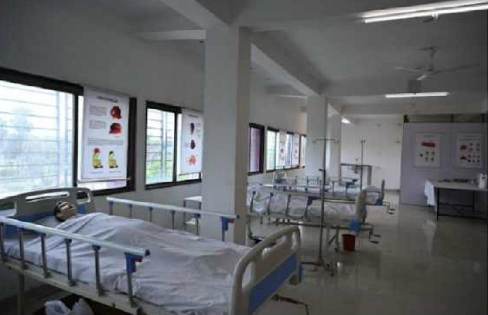
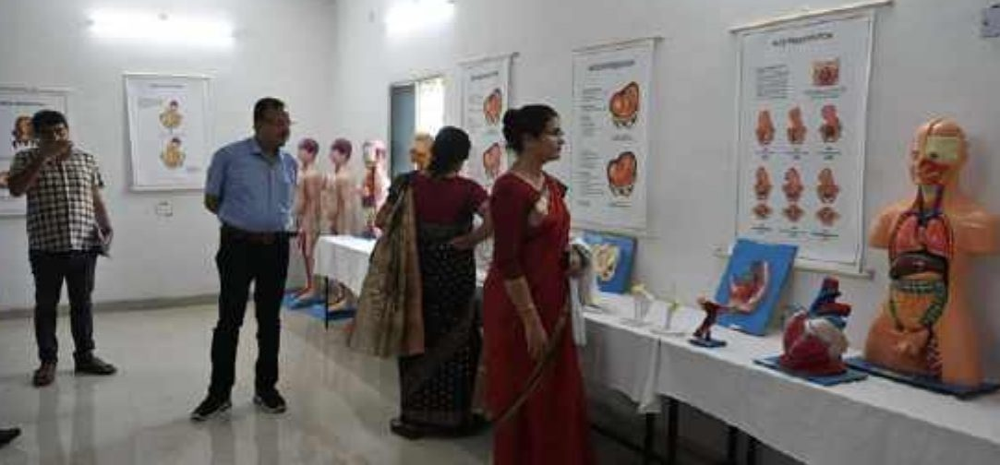
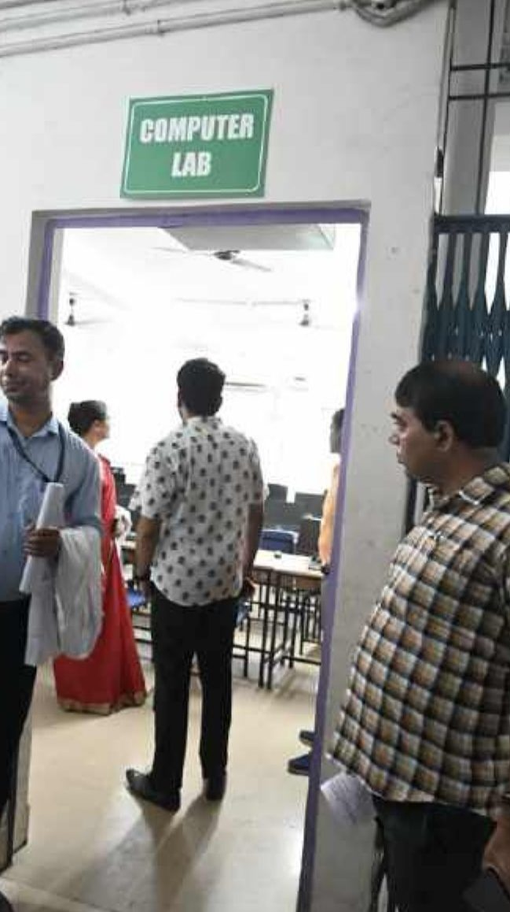

Home / Campus Life / Labs & Libraries
Campus Life
Where skills are built.
Ten specialised labs, a library with national and international journals, and modern medical software.






Our labs
🔬
Labs established
- Anatomy Lab
- Nursing Foundation Lab
- Nutrition Lab
- Community Health Lab
- Advance Nursing Skill Lab
- Adult Health Nursing Lab
- Maternal & Child Health Nursing Lab
- Pre-Clinical Science Lab
- Obstetrics & Gynaecology Lab
- Simulation Lab
📚
DELNET e-library
Access to full-text national and international journals, e-books, e-journals and a multimedia database.
Medical software
- Virtual simulation and virtual reality
- Video capturing software
- Electronic Health Record software
- e-clinical management software
- ePortfolio — digital patient management
- eMedley — nursing program software
- ELMS — nursing clinical software
- COMPAMED — radiology reporting
- RadPix — scanning input method
Library
E-journals
Nursing OutlookJournal of Advanced NursingThe Nursing Journal of IndiaInternational Journal of Nursing StudiesAmerican Journal of NursingJournal of Nursing ScholarshipJournal of Nursing EducationJournal of Nursing ManagementJournal of Nursing EthicsInternational Emergency NursingAustralian Critical CareWestern Journal of Nursing Research
Research & development
Research areas
- Chinese yoga for patients with diabetes mellitus
- Oral health hazards among village people
- Pain management among cancer patients
- Perimenopausal syndrome among school teachers
- PTP for KMC
- Planned teaching programme for dysmenorrhoea among girls
- Exploratory research to identify risk factors of CAD among students
- Structured teaching programme on breast self-examination for female students
- Internet addiction among college students